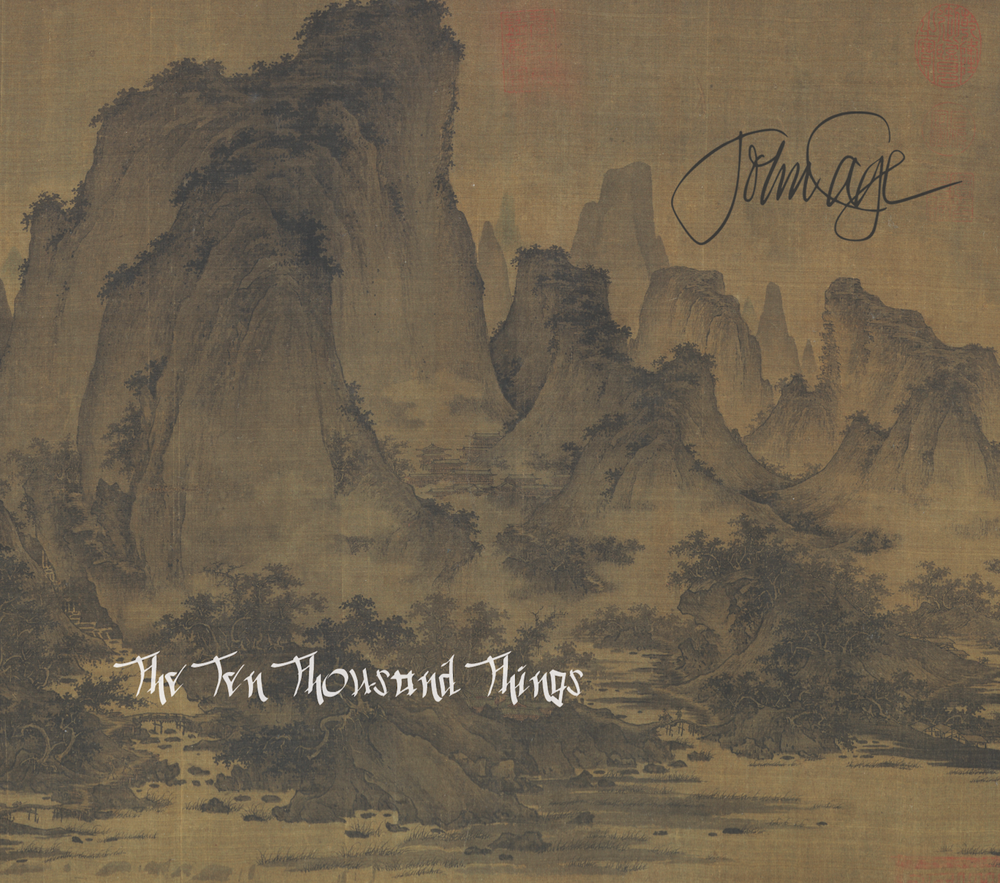
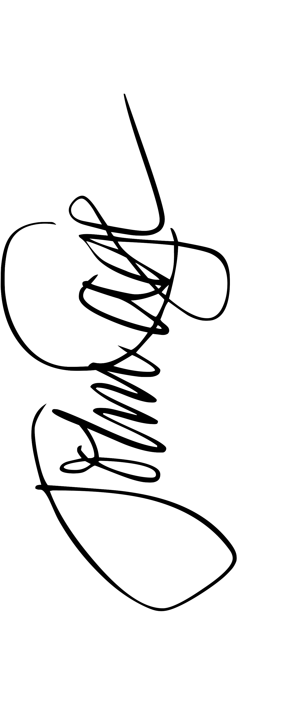

instructions
about
The Ten Thousand Things for speaker, string player, percussionist, and two pianists
26' 1.1499" for a string player
27' 10.554" for percussion
31' 57.9864" for piano
34' 46.776" for piano
45' for a speaker
00:00
0'
10'
20'
30'
40'